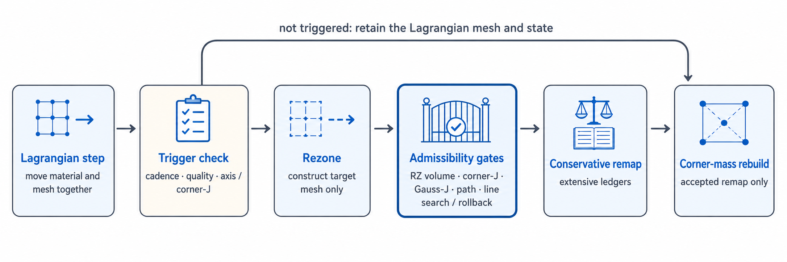
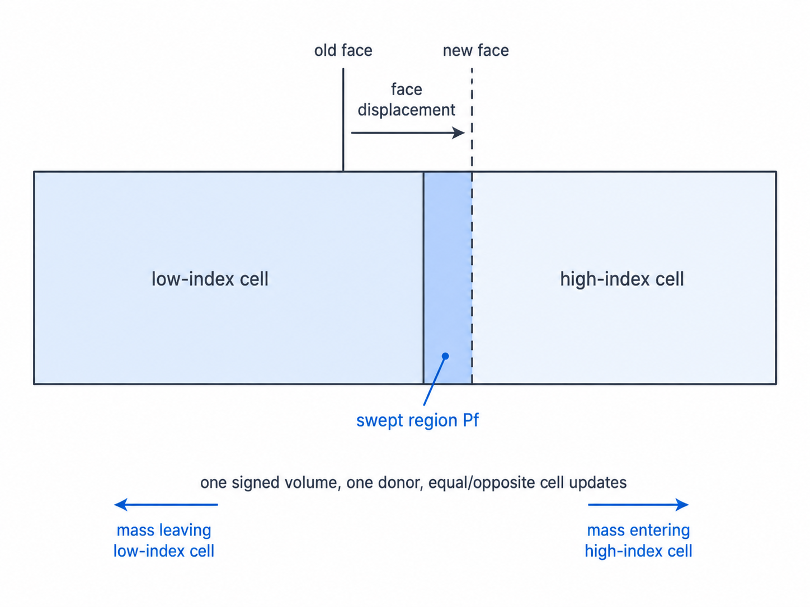

ALE: リゾーニングとリマップ reference
TENRYU の 2D RZ ALE は、ラグランジュ計算のあとでメッシュ形状だけを整える「リゾーン」と、物質の状態を新しいメッシュへ移す「保存的リマップ」を分離している。従来型 Winslow 系、参照・障壁目標、M1/TMOP 目的関数ソルバのいずれも同じ許容性契約に接続されており、受理された目標メッシュに対してのみ、質量・運動量・内部エネルギー・輻射群エネルギーを保存的に転写する。これらの固定接続の族に加えて、明示的に有効化する第二世代の ReALE（mesh_mode="reale_v2"）は、ジェネレータ移流と厳密テッセレーションでメッシュ位相そのものを作り直す（後述）。
物理機構
物質に追随するメッシュは物質界面を鋭く保つが、ずり流れ・渦度・収束時の非対称性はラグランジュメッシュに次第に無理をかける。セルはひずみ、扁平化し、ついには反転する。物質の物理が破綻するよりはるか前に、セルの最小高さが時間刻みを崩壊させる。ALE はこの問題への対処である。TENRYU はメッシュが健全なあいだはラグランジュ的な忠実さを保ち、健全でなくなった時点で、物質は動かさずにメッシュだけを動かす。リゾーンがより良い節点座標を提案し、リマップがその新しいメッシュ上へ状態量を保存的に転写する。名前の「任意（arbitrary）」は、メッシュの速度を物質速度（ラグランジュ）にも 0（オイラー）にも固定せず任意に選べる、という定式化上の自由を指す。TENRYU は、健全なあいだは物質速度を、必要になった時点ではリゾーンが提案する座標を採用する。
リゾーニングが扱うのは幾何であって物理ではない。後述するソルバ族の Winslow 型平滑化とその制約付き変種は、目標メッシュを構築するだけであり、解を暗黙のうちに変えてはならない。この分離を強制するのが、RZ 体積の正値性、コーナーヤコビアンの下限、ガウス点ヤコビアン、節点経路の検査、そして直線探索と巻き戻しである。許容できない目標メッシュは棄却され、そのサイクルはラグランジュ計算のまま進む。そもそもリゾーンを試みるかどうかは、実行間隔、メッシュ品質指標、軸およびコーナーヤコビアンの保護判定が決める。
リマップは、同じ接続関係をもつ旧メッシュと新メッシュのあいだで交わされる保存則の取引である。両者の面のあいだにできる符号付き掃過体積を用いて、厳密に帳尻を合わせる。各掃過領域は供給側セル（ドナー）の状態をひとつ取り、勾配再構成と MS2（Margolin–Shashkov 2 次 [4]）制限関数による単調 2 次精度で評価する。質量、化学種質量、運動量、内部エネルギーと運動エネルギー、輻射群エネルギーという示量量の収支はいずれも、ひとつの符号付き体積・ひとつのドナー・隣接セル間で大きさが等しく符号が逆の更新によって運ばれる。したがってメッシュの移動は、構成上、丸め誤差の範囲まで保存的である。文書化されたエネルギークロージャは、運動エネルギーのリマップと射影（リマップ後のセル運動量を節点速度へ戻す操作 — 後述）の差を物質の内部エネルギーへ繰り入れる。サブゾーンコーナー質量（セルを節点まわりに分割したサブゾーンの質量 — 流体の砂時計制御と整合エネルギー収支に使う）が再構築されるのは受理されたリマップの後だけであり、そこがコーナー質量のラグランジュ不変性が変化しうる唯一の点である。
実運用の管理型 ALE は、全体を一様に緩和するのではなく帯状に制御する。軸帯とオイラー窓が再配置の作用域を限定し（RZ のラグランジュメッシュは軸で最初に破綻する）、帯の内側だけの掃過体積リマップが保存則の取引を局所に保つ。受理されるサイクルはすべて、機能オフ時のビット一致契約も維持する。コントローラが無効な場合、あるいは一度も発動しなかった場合、結果は純ラグランジュ経路とビット単位で同一である。
ALE サイクルと発動条件
通常の入口はラグランジュ更新の直後である。ここで every_n_steps（既定 5）が定める実行間隔と、セル品質の低下を評価する。双一次写像を 2×2 のガウス点で調べ、セル品質を
と定義する。既定のしきい値は quality_threshold=0.2 で、\(q_c=1\) は平行四辺形、0 に近づくほど退化したセルであることを表す。spacing_ratio_threshold は設定と検証の対象ではあるものの、v1 では実行時の発火規則をもたない予約キーである（数値契約 — リポジトリの docs/NUMERICS.md §3.3 — に発火条件が定義されていない）。そのため現行の発動条件には数えない。
定期実行を待たない保護経路もある。予防的な軸ガードは、軸マージンが初期値の設定割合を下回った時点でリゾーンを強制する。軸マージンとは、軸に接するセル行が節点の移動で反転しないための幾何的な余裕を、軸行とその外側行の節点座標から閉形式で評価した量（単位 cm²）である。既定オフの流体計算前コーナーヤコビアン判定は、予測される軌道上で符号付きコーナーヤコビアンが下限に達する時刻を求め、予測される 1 ステップ分の節点変位のうち、コーナーヤコビアンが下限に達するまでに進める割合（全コーナーの最小値）がしきい値を下回るなら、演算子分割の前に ALE を起動する。参照障壁経路はさらに、軸近傍のマージン、コーナーヤコビアン比、対角コーナー長さ比を専用の発動条件として使う。

リゾーンソルバ族
legacy_winslow は、既定である簡略化直交 Winslow 更新をビット単位で従来どおりに保つ。論理格子上の計量係数を現在の座標から 1 反復遅らせてヤコビ反復し、交差微分項を省いた式（ここでの \(\alpha\)・\(\beta\) は Winslow の計量係数であり、輻射ページの同名記号とは無関係である）
を \(z\) にも適用する。明示的に有効化する完全 R-Z 計量版は、混合微分項と R 重み付き候補を含み、節点に接するセルのガウス点ヤコビアン、コーナーヤコビアン、符号付き RZ 体積、軸以外での半径を調べる節点局所の直線探索を利用できる。
参照 Winslow・障壁族は、初期のオイラーメッシュや等角度球面メッシュといった参照目標への変位を作り、参照メッシュに対する相対下限を課した全体直線探索で混合する。軸近傍の参照障壁や保護区画では、Winslow の提案を初期値として、体積とコーナーヤコビアンの障壁が定める実行可能領域へ射影する。検査されるのは終点だけでなく、ラグランジュメッシュから目標メッシュへ至る経路全体である。
m1_tmop は、明示的に有効化する減衰ガウス–ニュートン法のソルバである。参照計量に対する M1 品質、ラグランジュ位置への係留、極座標行の間隔正則化、行列式が小さいときに作用する障壁項を合わせた目的関数を最小化する。
ここで \(A_{cq}\)・\(W_{cq}\) はセル \(c\) のガウス点 \(q\) における実メッシュ・参照メッシュのコーナーヤコビアン、\(\omega_{cq}\) はその重み、\(\mu\) は整列重み \(\gamma_{\rm align}\) をもつ形状品質尺度で、ここまでが M1 品質項である。\(\lambda_{\rm tether}\) はラグランジュ位置 \(\mathbf x^L_i\) からの変位を局所スケール \(h_i\) で罰する係留項、\(N_v\) は節点総数、\(w_\theta\) の項は行集合 \(\mathcal R\) 上で左右の隣接距離 \(d_{iL},d_{iR}\) により極方向の行間隔を整える正則化、\(\beta\) の障壁項は \(\det A_{cq}<\sigma_b\det W_{cq}\) で発動する。
各節点の提案変位は局所的な辺長で頭打ちにされ、最大 12 回の半分刻み直線探索を通る。取引が受理されるのは、候補メッシュの判定器が許容と答え、かつ
$$ \frac{\mathcal J_{before}-\mathcal J_{after}} {\max(|\mathcal J_{before}|,10^{-300})} >\texttt{m1\_min\_j\_dec\_rel} $$を満たすときだけである。既定値 0.0 は目的関数の狭義減少を要求しつつ、わずかでも有益な改善は受け入れる。第 1 世代の M1 ソルバ（「M1 v1」）は極座標族メッシュ向けである。M1 の参照メッシュは固定の初期メッシュではなく、リゾーンが受理されるたびに受理後の座標へ張り直される移動参照である（この張り直しを再固定と呼ぶ）。受理された座標は移動参照メッシュを再固定してから保存的リマップへ渡される。
許容性と受理判定
リゾーン反復が収束したことと、メッシュが受理されることは別問題である。候補メッシュは有効セルごとに、符号付き RZ 体積が正であること、コーナーヤコビアンが正であること、2×2 ガウス点ヤコビアンが下限以上であることを満たし、軸上のセルではさらに解析的な軸マージンも満たす必要がある。方向分離型リマップでは、最初の掃引で生じる中間体積も正でなければならない。安全な後退探索はまず混合係数 \(\lambda=0\)（\(\lambda\) はラグランジュメッシュから提案メッシュへの混合率）、すなわちラグランジュメッシュそのものを検証し、\(\lambda=2^{-e}\) から二分探索で許容できる最大の混合率を求める。正の \(\lambda\) がひとつも通らなければ、メッシュと状態量を取引前へ巻き戻す。
この判定を分離しているため、「目的関数が下がった」「Winslow 残差が小さい」というだけでは確定されない。参照目標、M1 目標、管理型の修復のいずれも、最後には同じ幾何・経路の判定器と、保存的リマップの正値性検査を通る。
掃過領域による保存的リマップ
既定の legacy_split は、R 方向と Z 方向の掃引を交互の順序で実行する掃過領域リマップである。旧い面と新しい面が作る子午面上の多角形 \(P_f\) を軸まわりに回転して得られる符号付き体積は
である。ここで \((r_k,z_k)\) は新旧の面のあいだで掃過される子午面多角形 \(P_f\) の頂点、係数 \(\pi/3\) は軸まわりの厳密な回転体化に由来する。内部の面ひとつについてドナーと流束を一度だけ決め、隣り合う 2 つのセルへ大きさが等しく符号が逆になるように適用する。保存量のセル積分 \(\bar q=qV\) は
$$ \bar q_i^{new}=\bar q_i^{old}-F_{i+1/2}+F_{i-1/2} $$で更新される（\(F_{i\pm1/2}\) はセル \(i\) の両面を通る保存量の流束で、ドナー側の再構成状態と掃過体積から評価する）。転写の対象は、質量、R/Z 方向運動量、電子・イオンの内部エネルギー、物質体積、および輻射群ごとのエネルギーである。密度は \(m^{new}/V^{new}\)、速度はリマップ後の運動量を質量で割った値、比エネルギーはリマップ後の示量エネルギーを質量で割った値として復元する。要点は、\(\rho\)、\(\mathbf u\)、\(e\) のような示強量をそのまま平均するのではなく、先に保存量の積分を運ぶことにある。
- 符号付き掃過領域 \(P_f\): 符号は面が動いた向きを表し、絶対値はその面を横切って受け渡される体積である。
- ドナーの選択: 掃過体積の符号が風上側の供給セルを決め、同じセルが、その面ひとつ分の流束に使う再構成状態を供給する。
- MS2 制限関数: 制限を課した線形再構成は単調 2 次精度であり、リマップによって新たな局所的極値が生じることを防ぐ。
- 厳密な RZ 幾何: 多角形の回転体として掃過体積を評価し、MS2 では掃過多角形の 1 次モーメントも厳密に求める。軸近傍を 1 次近似で済ませることはしない。
- エネルギークロージャ: 文書化されたクロージャは、診断量と整合する形で、運動エネルギーのリマップと射影の差を物質の内部エネルギーへ繰り入れる。
- コーナー質量の更新時期: コーナー質量はラグランジュ運動中も、棄却された提案の下でも不変であり、受理された保存的リマップの後にだけ再構築される。
- 発動指標: 実行間隔、セル品質、軸マージン、コーナーヤコビアンが、幾何の取引を試みるかどうかを決める。

MS2 制限関数とエネルギークロージャ
明示的に有効化する ms2_moments は、Margolin–Shashkov 型の 2 次モーメントリマップである。隣接 4 セルの最小二乗勾配から \(q(\mathbf x)=q_L+\nabla q_L\cdot(\mathbf x-\mathbf x_L)\) を再構成し、van_leer または barth_jespersen で新たな局所極値を抑える。掃過多角形の厳密な 1 次モーメント \(M_1(P_f)\) を使うドナー積分は
（\(|P_f|\) は掃過多角形 \(P_f\) の回転体体積であり、\(\Delta V_f\) と同じ量である。）従来の分離型でも MS2 でも、同一の面流束を両側に符号を反転して用いるため、制限関数が 2 セル間の保存を壊すことはない。掃引ごとの質量・内部エネルギー・輻射エネルギーの正値性と、最後の EOS 再クロージャは、これとは別の判定である。
セルの運動量を節点速度へ戻す射影は、一般には運動エネルギーを厳密には保存しない。既定オンの ke_fixup は従来デッキとの互換のために受理される制御であり、射影後の運動エネルギー欠損を実際に扱うのは次の ke_conservation_closure である。明示的に指定する ke_conservation_closure（既定オフ）は、コーナー質量と節点速度で測った \(q_K=K_c^{diag}/V_c\) を同じリマップ機構で運び（その結果が \(K_c^{remap,*}\)）、射影後の \(K_c^{node,*}\) との差 \(\Delta I_c=K_c^{remap,*}-K_c^{node,*}\) を物質の内部エネルギーへ繰り入れる。正値性の再分配オプションは、内部エネルギーを負にしてしまう不足分を全体の余力から補い、補いきれない残差は収支表に明示する。
軸帯・オイラー窓・コーナー質量
axis_band_managed_remap_enabled は既定オフの軸近傍コントローラである。第 K 行のマージンがしきい値を下回ると、帯 \(i\in[0,K-1]\) だけを RZ 体積が等しくなる目標
へリマップする。ここで \(R_K(j)\) は軸方向添字 \(j\) における固定された第 \(K\) 行節点の半径で、帯の節点は回転体体積が等しくなるよう再配置され、軸方向座標は第 \(K\) 行に従う。K を設定範囲で広げながら正値性と保存収支を検査し、すべての候補が失敗した場合は、状態量を変えずに従来どおり時間刻みを縮小する経路へ戻る。質量、運動量、電子・イオンの内部エネルギー、輻射群は保存的に運ばれる。節点への射影に伴う運動エネルギーの差だけは、構成上、警告レベルの扱いである。
euler_window.enabled は、明示的に有効化するマルチブロック CSR 領域向けの目標メッシュである。矩形または円環の内側では凍結した参照格子を、外側ではラグランジュ座標を使い、その間を C1 連続な遷移重みで混合する。混合された目標メッシュは候補判定器を通過したうえで参照メッシュを再固定し、受理された M1 リゾーンと同じ保存的リマップの取引に入る。保存的リマップが必須であり、M1/TMOP とは同時に使えない。
流体側のサブゾーンコーナー質量は、純ラグランジュ運動のあいだは固定される。幾何だけを試して棄却されたリゾーンでは更新せず、受理されたリゾーンとリマップの後に、リマップ後のセル質量と新しいメッシュからのみ再構築する。この更新順序が、エネルギー整合な仕事と、砂時計モード抑制・サブゾーン圧力のラグランジュ不変性を守る。
受理される ALE サイクルの手順
発動条件を評価する。 ALE の入口で、定期実行の間隔と、セル品質・軸マージン・コーナーヤコビアンの保護判定を評価する。どれも発火しなければ、ラグランジュメッシュと状態量をそのまま保持する。
目標メッシュを構築する。 選択した Winslow、参照・障壁、または M1/TMOP のソルバ族を実行し、節点座標だけを提案する。管理型コントローラでは、提案の範囲を選んだ軸帯またはオイラー窓に限定する。
許容性を判定する。 符号付き RZ 体積が正であること、コーナーヤコビアン、2×2 ガウス点ヤコビアンの下限、該当する場合は軸マージン、そしてラグランジュメッシュから目標メッシュへ至る節点経路を検査する。必要なら直線探索で変位を縮小する。安全な後退探索は \(\lambda=0\) を検証したうえで \(\lambda=2^{-e}\) を探索し、許容できる最大の混合率まで細分化する。正の混合率がひとつも通らなければ、取引前のスナップショットを復元してラグランジュ計算に留まる。
掃過領域を構築する。 旧い面と新しい面のあいだに向きの付いた多角形を作り、その軸対称な符号付き体積を厳密に評価する。2 次精度の経路では 1 次モーメントも厳密に求める。最初の方向掃引で生じる中間体積は正でなければならない。
保存量の収支を転写する。 掃過体積の符号からドナーを選び、指定された van Leer または MS2 の制限関数で状態を再構成し、面ごとの流束を一度だけ評価して両側のセルへ符号を反転して適用する。質量、化学種と物質の収支、R/Z 方向運動量、電子・イオンの内部エネルギー、輻射群エネルギー、有効化されている運動エネルギー診断の収支は、すべてこの取引に従う。掃引ごとの正値性は引き続き巻き戻しの判定条件である。
クロージャを適用して確定する。 リマップ後の運動量を節点へ射影し、有効であれば文書化された運動エネルギークロージャを内部エネルギーへ適用する。続いて、リマップ後のセル質量と受理されたメッシュからコーナー質量を再構築し、熱力学的な再クロージャを行う。受理の際はメッシュと状態量をひとつの取引として同時に確定し、失敗した場合は両方を復元する。
機能契約を監査する。 保存収支が取引の受理を関門として検査し、ALE 無効・一度も発動しない・恒等モードの各実行が、純ラグランジュ計算とビット単位で一致することを監査する。この機能オフ時のビット一致検査と保存検査が、ALE 機能全体の関門である。
第二世代 ReALE（reale_v2）
mesh_mode="reale_v2"（既定 "fixed"）で明示的に有効化する、第二世代のリゾーン・リマップ系である。ここまでの族が固定の接続関係のうえで節点座標だけを動かすのに対し、reale_v2 は受理されたラグランジュステップの確定後に、セル重心に置いたジェネレータ（各セルを代表する母点）をセル平均の節点流で移流し、現在の外周境界と軸が囲む領域上で制約付きボロノイ／CVT（重心ボロノイ分割）の目標を構築し、厳密テッセレーションでメッシュ位相そのものを作り直したうえで、流体場を保存的にリマップして stride-8 CSR 位相を次ステップの前に据え付ける。目標・テッセレーション・位相・リマップのいずれかが棄却されると、そのサイクルは確定済みラグランジュ状態を変えずに [reale_v2] SKIP を出し、成功した確定は [reale_v2] COMMIT を出す。パイロットの適用範囲は狭く固定されている — Main.dimension="2D_RZ"、MPI 1 ランク、単一物質、PLIC・物質別保存状態なし、流体有効、輻射・伝導・レーザー・燃焼は無効、Mesh.topology_scheme="multiblock_polar_tier" かつ polar_tier_native_pentagon=True — それ以外の組合せは ConfigError である。このモードはビット単位の再現性を主張しない。
この系の機構には調整可能なパラメータがひとつも存在しない。すべての閾値は、機械イプシロンから導出された誤差限界か、絶対的な述語である。幾何述語（向き・外接円の内外）はフィルタ付き厳密評価で決まる：倍精度の高速判定を認証誤差限界（コンパイラ縮約への安全率 2 を掛けた Shewchuk 型 A 限界）で受理し、不確かな場合だけ厳密な展開演算へ、さらに必要なら安定な生成点 id のみに基づく記号摂動（SoS）へ落ちる。受理された符号は厳密な符号に等しい。以下では、この系の運転を決める機構群を述べる。テッセレーション本体・保存的オーバーレイリマップ・持続境界キャリア（境界折れ線を世代を超えて所有し続けるラグランジュ節点群で、境界の接合点を領域へ二度と昇格させない）の全容は、リポジトリの docs/NUMERICS.md §15 が正典である。
必要時のみ発動するリゾーン
リゾーンは周期ではなく必要で発動する。理由は優先順に 4 つある：(i) first — 発動判定の参照（直前の確定で据え付けた節点集合）がまだ存在しない初回。(ii) ceiling — 最後の確定から TENRYU_REALE_REZONE_INTERVAL ステップが経過した。環境変数のみの上限で、既定 1 は歴史的な毎ステップ挙動を保存し、namelist・凍結設定のフィールドは持たない。(iii) dt — 流体の時間刻み制約が、確定直後の最初のステップで捕捉した参照値の半分まで低下した。(iv) disp — いずれかのセル角が最後の確定以降に \(h_c/2\)（\(h_c=\sqrt{A_c}\)、\(A_c\) は平面セル面積）以上移動した — CFL 級の半セル変位である。二つの 1/2 は CFL 級の導出定数であって調整項ではない。変位センサスは GPU 常駐で、セルごとの最大値縮約を決定的な atomic max で行い、その参照は確定のたびにデバイス内コピーで更新される。発動は理由を添えた [reale_trigger] 行に残り、確定行は trigger= を運ぶ。
Lloyd 反復の収束判定 — d1 証明付きスキップと d2 表現床
目標構築の Lloyd／CVT 反復（ジェネレータを自セルの重心へ動かして間隔を整える緩和。反復上限 4）も必要基準で打ち切られる。第一の出口は証明付き述語マージンスキップ（d1）である。提案のテッセレーションを構築する前に、現在の warm ドロネー三角形分割（前回のリゾーンから引き継いだ三角形分割）を支えるすべての証明書 — 三角形の向き、内部辺の外接円判定、凸包の凸性トリプル — について、フィルタ付き余裕 \(s=|\tilde D|-E\)（\(\tilde D\) は倍精度で評価した述語行列式、\(E\) はその認証誤差限界）と、提案されたサイトごとの変位のもとでの行列式変化の区間伝播限界 \(\Delta_D\)（積の規則 \(\Delta_{xy}\le U_x\Delta_y+U_y\Delta_x\) を述語自身の式木に沿って写したもの）とを、純粋な倍精度演算で比較する。すべての述語で \(2\Delta_D\le s\) が成り立てば、変位経路のどこでも厳密な述語符号がひとつも反転できないこと — したがって提案のドロネー位相が現在のそれと同一であること — が証明され、その反復は構造的に無操作として、提案を採用せずにループを打ち切る。証明が立たない場合（ちょうど共円・共線の部分配置での退化した余裕、warm 基底の不一致、または TENRYU_LLOYD_D1_DISABLE）は第二の出口へ落ちる。保守側にしか誤らないため、正しさは無条件である。
第二の出口は表現間隔の床（d2）である。提案されたすべてのサイト移動が、そのサイト自身の座標表現間隔 \(\delta_i=\mathrm{ulp}(|r_i|)+\mathrm{ulp}(|z_i|)\)（\(\mathrm{ulp}\) はその値における隣接倍精度数との間隔）を下回るなら、その反復は保存座標の浮動小数点ノイズ床より下を磨くために完全なテッセレーション 1 回を支払うことになる — 判定は提案のテッセレーションを作る前に行われ、ループはそこで打ち切られる。d1 が効く測定済みの領域は、d2 が構造的に効かない領域である：緩和済み配置の Lloyd フィードバックが全移動 \(10^{-14}\) 級 — 表現床より上 — でリミットサイクルするとき d2 は決して発火しないが、証明付きマージン（典型的には局所間隔の \(10^{-6}\)〜\(10^{-4}\)）は直ちに発火し、リゾーンごとに 4 回の完全テッセレーションを支払い続けることを止める。発火は [lloyd_d1] 行 1 行に記録され、目標結果の lloyd_d1_fired／lloyd_d1_iteration に現れる。どちらの出口も調整可能パラメータを導入せず、反復上限は変わらない。
表現条件付き weld 商 — 導出床 \(\chi_e\le4\) と二帯 fail-loud
厳密 restricted ボロノイコアは、最終の DCEL（辺基準の位相表現）を公開する前に、決定的な退化商を適用する：座標表現の分解能に対して短すぎる辺を、それが幾何情報ではなく丸めノイズであるという判定のもとで融合（weld）する。表現された辺 \(e=(a,b)\) について \(\ell_e^2=(r_b-r_a)^2+(z_b-z_a)^2\)、\(\delta_e=\{u(r_a)+u(r_b)+u(z_a)+u(z_b)\}/2\)（\(u(q)\) は \(q\) に隣接する 2 つの倍精度間隔の大きい方）とする。生の pre-weld セル \(c\) の厳密 shoelace 面積 \(A_c\) と厳密 dyadic な L1 周長 \(P_c\) から局所スケール \(h_c=2A_c/P_c\) を、節点 \(a\) では接続セルにわたる最小値 \(h_a\)（同値は安定なサイト id で破る）を、辺では単一の正準値 \(h_e=\min(h_a,h_b)\) を使う。候補許容・完全連結証明書・最終残差監査のすべてが同じ測定を使い、面積・周長・局所スケールは生の DCEL で凍結される — 縮約が受理尺度を再定義することはない。融合の判定は
$$ \chi_e=\frac{\ell_e^2}{\delta_e h_e}\le 4, \qquad\text{同値に}\qquad \ell_e^2 P_c\le 8\,\delta_e A_c $$（右の形は \(h_e\) を与える節点接続セル \(c\) について）で、等号は融合し、比較は丸めた商としきい値ではなく展開演算による符号判定である。床の 4 は導出値であって調整項ではない：\(\ell_e\) の \(\pm2\,\mathrm{ulp}\) 適用帯と、対の 2 つの節点 \(h\) のあいだの帰属幅が、それぞれ因子 2 級の曖昧さを持ち込むため、測定された \(\chi_e\le2^2=4\) は床から頑健に区別できない。基礎にある均衡は、表現された短辺を保持するコスト \(E_{retain}=\delta_e/\ell_e\) と潰すコスト \(E_{collapse}=\ell_e/h_e\) の比較である。L1 周長は L2 周長以上なので、規則は高々 \(\sqrt2\) 倍保守側に寄り、判定は厳密に dyadic のままである。
縮約は持続境界キャリアの類規則に従う：内部節点は内部とだけ、スレーブ（キャリア辺上の従属接合点）は同一キャリア上か自身のキャリア端点マスターへだけ、軸節点は同一軸キャリア内か軸マスターへだけ縮約できる。境界と内部、キャリア間、軸と非軸、異なるマスター同士の対は禁止である。クラスタはマスターを高々 1 つ持ち、完全連結クラスタリングが巨視的な推移連鎖を阻む。fail-loud 不変量は二帯である：禁止類対・マスター対は、厳密帯 \(\chi_e\le1\) — ノイズ以下の辺が融合不能な節点のあいだにあることが壊れた幾何の証明になる帯 — でのみ weld_forbidden_class_pair／weld_master_master を発火する。拡張帯 \(1<\chi_e\le4\) の辺はノイズと証明されないため黙って保持され、extended_band_forbidden として計数される。固定点後の最終監査も、厳密帯の残差だけを通常のスキップ経路（weld_residual_subfloor）でリゾーン棄却とし、拡張帯の残差は全クラスがセンサスのみの診断である。
DV-CLP 速度射影と D3 KKT 証明書
オーバーレイリマップの後、セル運動量から復元した節点速度場は DV-CLP 射影で整えられる：辺ごとに受理された速度跳び予算（隣接節点間に許される速度差の証明付き上限）を制約として、節点質量計量のもとで r・z 成分ごとに射影する。自由度 256 以下の連結成分は、半滑らか Newton の二次錐計画と厳密証明書の経路を保つ。それを超える成分は決定的な段階列を使う：まず D1 質量計量 Dykstra — 安定な辺 id 順に、辺の暫定跳びを予算 2 球へ射影し、補正を対の質量中心まわりで両端節点へ配る反復（完全掃引の上限 256。毎掃引後に既存の全辺厳密実行可能性走査が早期終了を許す）— が実行可能性のみの解 dykstra_feasible を与える。D1 が尽きれば D4 商並進 — 違反しない辺の連結成分を剛体クラスタとみなし、違反する切断辺だけをずらした球制約に縮約して、同じ質量計量 Dykstra をクラスタ質量で回す（軸節点を含むクラスタは半径方向並進を凍結）— が走り、それも尽きるか収束後の全辺再走査に残差が見つかれば、D1 前の成分スナップショットをビット単位で復元して既存の相似（homothety）フォールバックが走る。
D3 は、dykstra_feasible 成分のラベルを「丸めまで厳密な射影」へ昇格させることを試みる能動集合 KKT 証明書である。能動集合は導出帯 \(\mathrm{jump}\ge b_e\,\{1-8(w+2)\varepsilon\}\)（\(b_e\) は辺予算、\(w\) は述語が用いる経路区間数、\(\varepsilon\) は機械イプシロン。実行可能性述語の上側帯の厳密な鏡）で同定し、予算ゼロの辺は等式能動としてビット単位で再検証する。双対証人は、能動部分グラフの安定な全域森の上の葉消去で構成する — r と z の独立な流れをもち、閉路を閉じる辺・非能動辺・軸辺の半径方向乗数は 0 に固定する。証明書は、節点ごとの停留性を Neumaier 補償和と導出包絡 \(8(\deg+2)\varepsilon\sum|\text{terms}|\) のもとで検証し、能動辺ごとのユークリッド法錐条件 — 乗数が跳びに平行で、その向きに非負、相対包絡 \(16\varepsilon\) — を検証する。この段は速度を一切変更しない：対ごとの Dykstra 更新は成分運動量を丸めまで保存するから、等式 KKT の主補正（成分並進のヌルモード）は構成上丸め以下であり、証人は純粋に診断である。全条項が成立した成分は solver_class=4 を報告し、どれかの条項が落ちれば実行可能性のみのラベル 1 を保持する — 決して降格されない — 落ちた条項は kkt_fail_eq／kkt_fail_stationarity／kkt_fail_cone として計数される。[dvclp_comp] のソルバ級は、0 = 半滑らか Newton、1 = Dykstra 実行可能、2 = 相似フォールバック、3 = 商並進実行可能、4 = 能動集合 KKT 証明書を通過した Dykstra 実行可能（丸めまで厳密な射影）である。
合意許容の理由コードと LATTICE_ZERO
予算が証明付きでゼロ等価な辺は、両端速度の等値を強制する「合意」拘束として扱われ、連結成分ごとに単一の単位へ縮約される。この許容証明は理由コードで分類される：厳密にゼロの予算（ANALYTIC_ZERO）、丸め包絡の証明書（ROBUST_ZERO）、そして格子類（LATTICE_ZERO）である。格子類は、認証済みの予算上限が \(g_e=\min\bigl(\mathrm{ulp}(v_{r0}),\mathrm{ulp}(v_{r1}),\mathrm{ulp}(v_{z0}),\mathrm{ulp}(v_{z1})\bigr)\) — 両端節点・両成分にわたる速度の最小表現間隔 — を下回るとき、表現可能な非ゼロの速度差がそもそも存在せず、等値が唯一の表現可能な実行可能点である、という証明である。端点と成分にわたる最小を取るのは保守的な床である — 二進指数域をまたぐ対は細かい側のオペランドの間隔を実現しうる。許容は常に証明単独で立つ：フォールバック族がその辺を平坦化するだろうから、という理由で許容されることは決してない。
staged-dt gate — 生産要件 rezone_min_dt_s
リマップとキャリア速度射影の後、staged 配列をひとつも据え付ける前に、ホスト側の staged-dt gate が staged リング辺をセル／面番号順にすべて評価する。基底の CSW98 辺 AV の CFL 式を、設定された Numerics.hydro.av_cfl_coefficient のまま転写し（AV リミッタ \(\psi\) は 0 に固定 — 限界を拒否側へ保守的に偏らせる文書化された偏差）、正の面方向閉速度をもつ辺には節点交差限界 crossing_dt_safety × 辺長 ÷ 閉速度も課す。staged 限界の最小値が rezone_min_dt_s より真に大きいときだけリゾーンは確定する。さもなくば、限界・閾値・律速セルを添えた staged_dt SKIP を出し、据え付け済みのメッシュには触れない（据え付け前なので巻き戻し機構も要らない）。既定は \(10^{-14}\) 秒、0 は評価を無効化し、負値は ConfigError である。この閾値は Numerics.dt.max_s と同じ級の、デッキが所有する生産要件であって、weld の幾何許容差では決してない。
確定後の dt 成長 ladder 再アンカー
リゾーンの確定後、時間刻みコントローラは成長 ladder（時間刻みページの成長率制限が作る、前ステップ比の拡大上限の系譜）を一度だけ、上方にのみ再アンカーしてよい：確定後最初の採用 \(\Delta t\) を、「成長以外の全制約の最小値」と「最後の spike 前採用 \(\Delta t\)（律速が流体制約でなかった直近の採用値）」の小さい方まで引き上げる。リゾーンが除去した spike エッジは持続的な制約ではないから、ladder に残るその記憶は構成上 stale である。spike 前の値を上限に置くことで発動と再アンカーの対は spike 前の運転点へ収束して振動せず、真に劣化したメッシュ（流体制約が依然低い）では引き上げが現在の流体項で頭打ちになるため、ladder の保護は失われない。適用時は系譜 limiter に rezone_reanchor が記録される。
GPU テッセレーション gates — tess_gpu_dual／tess_gpu_restrict
厳密テッセレータの 2 つの段は、byte 同一性を保ったまま GPU へオフロードできる。どちらも既定 False の opt-in で、有効時に CUDA デバイスが無ければ loud に失敗する（ホストへの黙った降格はない）。tess_gpu_dual=True は、dual 構築の三角形ごとの厳密外心構成を GPU 化する。デバイス核はホストの展開演算パイプラインを演算単位で複製する（明示 fma による two_product、同値優先の大きさ併合、ゼロ省略、厳密な 2 冪スケーリング。この翻訳単位は fmad 縮約を無効にしてコンパイルされる）ため、採用された三角形はホストの項列と構成された外心座標対を byte-for-byte 返す。演算木から導出した固定容量（分子 48 項以下・分母 16 項以下・作業バッファ 64 項）の超過、零または非正の分母、非有限の累算 — のいずれかを検出した三角形は、三角形ごとの構造証明書によって変更のないホスト厳密経路へ回され（決定的なクラス発行順で処理）、フォールバック分も採用分もホストの byte を生む。三角形ごとの純写像で atomics を持たず、バッファは持続プールから供給される（呼び出しごとの cudaMalloc なし）。検証は、OFF がホスト経路に触れないこと、および ON が正準直列化の byte 同一性 — 69,626 サイトの生産点群と合成共円格子、強制フォールバック同一性、クラスごとの証人／構成値の byte shadow gate — で認証されることによる。
tess_gpu_restrict=True（tess_gpu_dual=True が必須。さもなくば ConfigError）は、さらに restrict 段 — dual 節点の領域内外分類 — を GPU 化する。デバイス常駐の dual 項列から、全領域セグメントに対する認証付き総当り winding（回り込み数）を計算し、z 比較と向きの符号は、複製された実行時誤差限界フィルタ（標準の 2 倍拡幅）を通って認証されたものだけを採用する。認証された winding は厳密な winding に等しく、認証された節点はどのセグメントにも触れないことが証明される（厳密にゼロの向きは決して認証されない）から、その分類 — 内外と空のサポート — はホストの厳密結果そのものである。不確定・境界接触・フォールバック起源の節点は、変更のないホスト分類を節点順に実行する。出力は節点あたり 1 status byte であり、決定性と byte 同一性は上と同様に従う。どちらの gate も、物理・数値の意味論を構成により変えない純粋な実行場所の選択である。
namelist による制御
以下は Numerics.ale の主要キーの抜粋である。全項目と検証規則は namelist リファレンスを参照のこと。
| キー | 既定値 | 用途 |
|---|---|---|
enabled | True | 2D RZ の ALE リゾーン・リマップサイクル全体の有効化（Numerics.ale 直下のキーである。rezoning という下位ブロックは存在しない）。 |
every_n_steps | 5 | 定期リゾーンの実行間隔。 |
quality_threshold | 0.2 | \(\min q_c\) がこの値を下回ると品質判定で発動。 |
rezone_solver | "legacy_winslow" | 従来の Winslow 族、または明示的に有効化する "m1_tmop"。 |
m1_min_j_dec_rel | 0.0 | M1 の取引に要求する目的関数の相対減少量の下限。 |
remap_scheme | "legacy_split" | 方向分離型の掃過領域リマップ。明示指定で "ms2_moments"。 |
remap_limiter | "van_leer" | 従来の分離型リマップにおけるドナー再構成の制限関数。 |
ke_fixup | True | リマップ後の運動エネルギー補正（従来実装との互換のための制御）。 |
axis_band_managed_remap_enabled | False | 軸近傍の帯だけを等体積目標へ移す管理型リマップ。 |
euler_window.enabled | False | 局所オイラー参照目標と C1 遷移の有効化。 |
mesh_mode | "fixed" | 第二世代 ReALE の入口。"reale_v2" でジェネレータ・ボロノイ型リゾーンを有効化（適用範囲は本文参照）。 |
reale_core | "exact" | reale_v2 のテッセレーション権威。厳密ドロネー／restricted ボロノイコアが生産既定（"legacy" は mesh_mode="fixed" でのみ受理され、その場合は不活性）。 |
rezone_min_dt_s | 1.0e-14 | staged-dt gate の生産要件（秒）。staged 限界の最小値がこの値以下なら staged_dt SKIP。0 で評価無効、負値は ConfigError。 |
tess_gpu_dual | False | 厳密外心構成の GPU バッチ（byte 同一）。有効時は CUDA デバイス必須（loud に失敗）。 |
tess_gpu_restrict | False | restrict 段の認証付き GPU 分類（byte 同一）。tess_gpu_dual=True が必須。 |
検証
- 機能オフ経路のビット一致検査は、ALE を無効にした実行が変更前の場と履歴にビット単位で一致することを確認する。
- リマップの保存収支は、質量、R/Z 方向運動量、物質内部エネルギー、輻射群エネルギーと、明示的な下限・再分配項の閉じ方を追跡する。一般のリマップに対する質量の判定基準は相対誤差 \(\le 10^{-14}\) である。管理型軸帯の単体検査は、質量・内部エネルギー・輻射エネルギーに \(10^{-12}\)、並進不変な運動エネルギーに \(10^{-10}\) を用い、実行時は質量・内部エネルギー・輻射・セル運動量の残差が \(10^{-8}\) を超えた時点で巻き戻す。
ale_identity_modeは ALE の入口をラグランジュ更新の直後で素通りさせるヌル試験である。ALE を有効にした実行が、同じ時間刻みで ALE を切った実行と場のレベルで一致することを要求する。- I 系列の検査群は、実運用 ALE のリゾーン、許容性判定、保存的リマップ、軸・マルチブロック経路を、実際の連成計算全体を通して動作させる。
- reale_v2 系の検証は構成上 fail-closed である：目標・テッセレーション・位相・リマップ・staged-dt のどの gate の違反も、そのサイクルのリゾーンを SKIP させ、確定済みラグランジュ状態を変えない。GPU テッセレーション gates は、OFF 経路に対する正準直列化の byte 同一性で認証される。
参考文献
- A. M. Winslow, "Numerical Solution of the Quasilinear Poisson Equation in a Nonuniform Triangle Mesh," J. Comput. Phys. 1, 149–172 (1966). doi:10.1016/0021-9991(66)90001-5
- P. M. Knupp, "Algebraic Mesh Quality Metrics," SIAM J. Sci. Comput. 23, 193–218 (2001). doi:10.1137/S1064827500371499
- V. A. Dobrev, P. Knupp, T. V. Kolev, K. Mittal, and V. Z. Tomov, "The Target-Matrix Optimization Paradigm for High-Order Meshes," SIAM J. Sci. Comput. 41, B50–B68 (2019). doi:10.1137/18M1167206
- L. G. Margolin and M. J. Shashkov, "Second-Order Sign-Preserving Conservative Interpolation (Remapping) on General Grids," J. Comput. Phys. 184, 266–298 (2003). doi:10.1016/S0021-9991(02)00033-5